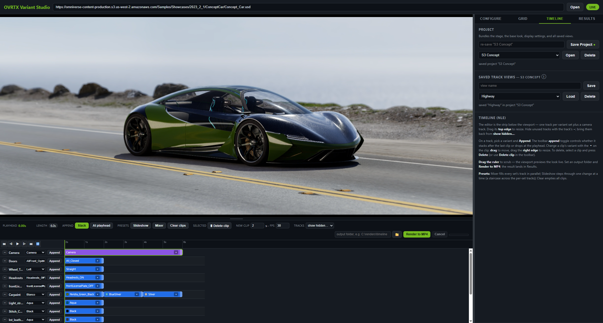

Sample
OVRTX Dev Variant Presenter
Present USD variants live in a path-traced viewport streamed to your browser, then capture them to stills or MP4. Built on ovrtx, ovstage and ovstream.

Open a USD stage, render it live in a path-traced viewport streamed over WebRTC, switch variants on the fly, and render the visual state out to stills or MP4. The renderer runs on your workstation; the browser shows the video and the controls. Your USD files are never modified.
It exists to show how the pieces fit together: one thread owning an
ovstage.Stage with an ovrtx.Renderer attached, composing USD
non-destructively, wiring ovstream into a FastAPI control plane.
What you can do
- Switch variant sets live and see the result immediately
- Frame authored cameras, orbit, and pick a focus point or pivot
- Override camera position, rotation and optics in a composite layer, leaving the source stage untouched
- Build a turntable rig and preview the spin
- Batch-render a permutation grid to stills
- Sequence variants and cameras on a timeline and render an MP4
- Open a stage straight from an
http(s)or S3 URL
Instant variant switching
At stage open, each variant set is classified into shader-input (material and colour swaps) or structural (transform, visibility, binding). For the shader-input sets it also records the attribute writes each variant makes: the prim, the attribute and the value.
When every changed set is shader-input, those writes replay straight into the live
ovstage.Stage under one shared ordinal, so the switch lands atomically with
no recompose. Anything structural falls back to a full reload.
Fast start
Needs an NVIDIA RTX GPU, Python 3.11 with uv, Node.js, and a Chromium browser. Validated on Windows.
-
Clone the repo and
cd samples/ovrtx_dev_variant_presenter. Every command below runs from there. - Run
uv syncto create the environment. -
Start the server with
powershell -ExecutionPolicy Bypass -File run_server.ps1or./run_server.sh. - Open the printed URL in one tab. The stream is single-client.
- Paste a stage path or URL and press Open.
Using a coding agent? Open the sample folder and ask it to
"set up and start the OVRTX Dev Variant Presenter server". That wording matches
the bundled skills in .claude/skills/, which carry the full procedures.
AGENTS.md in the sample root is the single source of truth and points at
them.
The first open compiles shaders and takes a few minutes; later runs reuse the cache.
Clone and explore:
samples/ovrtx_dev_variant_presenter/